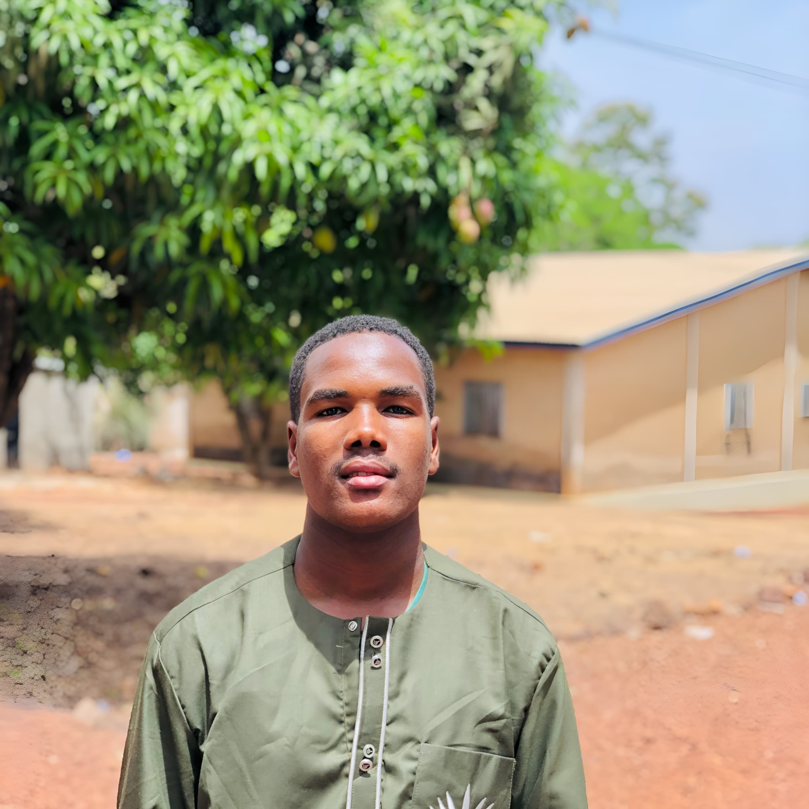

Baldé Mamoudou
Adresse : Dubréka, Keitayah
Tél : 627464995
Email : baldemamoudou101@gmail.com
Langues
Français, Pular, Soussou
Loisirs
Lecture, Sport, Nouvelles technologies
Passionné par les technologies du numérique, j’ai achevé en 2025 ma licence à l’Université de Labé (diplôme en cours de délivrance). Curieux, motivé et dynamique, je recherche un stage afin de mettre en pratique mes connaissances et d’acquérir de nouvelles compétences.
Formations
- Étude primaire (2009-2015) : Sainte-Marie de Dixinn
Diplôme : CEE - 2015
- Étude secondaire (2015-2017) : Sainte-Marie de Dixinn
(2018-2019) : École Internationale de Conakry (EIC)
Diplôme : Attestation du BEPC - 2019
(2020-2022) : Lycée Sainte-Marie de Dixinn
Option : Science Mathématique, session 2022
Diplôme : BAC - 2022
- Étude universitaire (Depuis 2022) : Université de Labé
Département : Informatique
Compétences techniques
- Programmation : Python,Javascript
- Développement Web : HTML, CSS,PHP,Node js
- Bases de données : MySQL, Oracle
- Notion de base en Réseau
- Méthodologies : Bonne capacité d'apprentissage, esprit analytique
Certifications
- Certificat de formation en Data Science, 17-18 mai 2024 à l'Université de Labé
- Certificat de formation en Intelligence Artificielle, 09 septembre-11 octobre 2024 à l'ODC de Ratoma